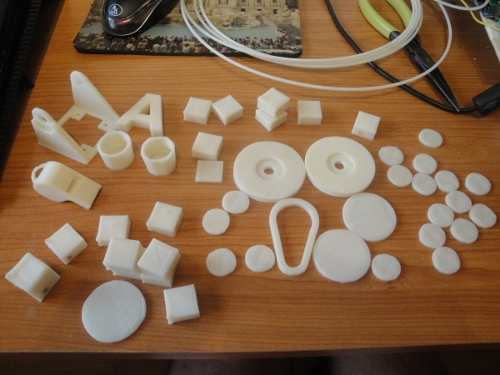

Mi clon R2D2 está imprimiendo bastante bien.
Durante estas navidades he aprovechado para hacer una calibración inicial y empezar a imprimir piezas.
El resultado es: ¡No puedo parar de imprimir! 🙂

Para la calibración he impreso cubos, monedas, fichas de casino y el tradicional vaso de chupito. Después he sacado otras piezas, entre ellas la letra A (para mis hijos):

El mosquetón…


El silbato…

El logo de la alianza rebelde(de Anita del Prado)…

La cabeza y el cuerpo de los módulos Repy (versión 1.2 de David Estévez)…

y no podía faltar una felicitación para el nuevo año:

La impresora está funcionando mucho mejor de lo que yo me pensaba. De hecho, me gusta más que la Makerbot. Es muy suave y silenciosa, y totalmente actualizable. Eso sí, es menos fiable. Hay que estar pendiente e ir solucionando los problemas que aparecen. Pero merece la pena. ¡Os recomiendo que os construyáis una! (Proyecto Clone Wars)
El problema más grave que tengo ahora es que hay un error de 0.5mm en el eje Y por lo que los círculos salen un poco achatados. Espero solucionar el problema colocando un engranaje metálico en el motor, sustituyendo al de plástico.
¡Feliz friki año 2012!